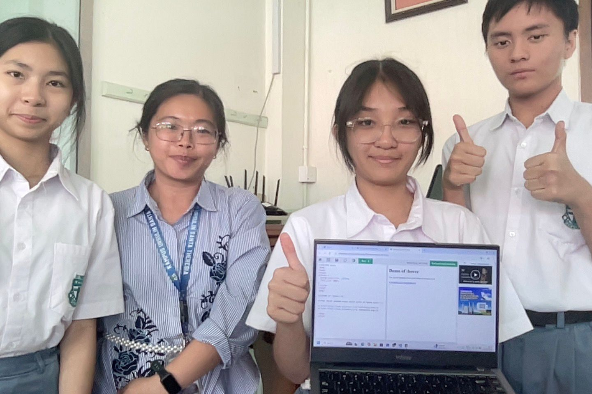
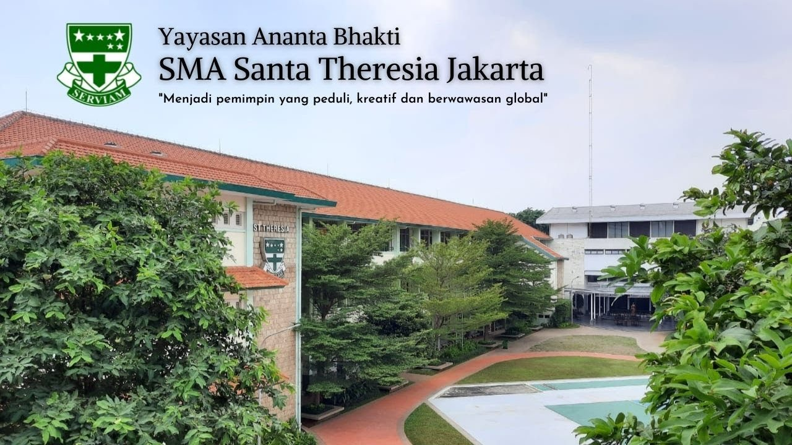

Informasi tentang kelompok kami, sekolah kami, credits, dan daftar pustaka.
Kami adalah kelompok 8 dari kelas X2 dari sekolah SMA Santa Theresia. Kami terdiri dari 3 anggota, yaitu:

Dari kiri ke kanan: Kathleen, Ibu Juju (Guru Informatika), Olivia, Taran
Kami memilih untuk membahas tentang masalah doxxing, karena kami ingin meningkatkan kesadaran masyarakat agar mereka terhindar dari ancaman serius terhadap privasi dan keamanan mereka. Seluruh masyarakat sekarang sudah menggunakan dan mengandalkan pada internet dalam kehidupan sehari-hari. Kami merasa bahwa di tengah modernisasi yang semakin pesat, banyak orang masih belum memahami risiko penyalahgunaan data pribadi yang mereka bagikan secara online. Maka dari itu, melalui pembahasan ini kami berharap masyarakat dapat lebih waspada dan mampu melindungi informasi pribadi.
Kami bersekolah di SMA Santa Theresia. SMA Santa Theresia adalah sekolah menengah atas (SMA) Katolik swasta yang dikelola oleh Yayasan Ananta Bhakti di Menteng, Jakarta Pusat. Sekolah ini merupakan bagian dari Kampus Ursulin Santa Theresia, dengan Santa Angela Merici sebagai pelindung sekolah. SMA Santa Theresia membentuk pribadi yang menanamkan nilai Serviam dalam siswa-siswinya.

Foto sekolah SMA Santa Theresia
Talenta, G., msf.telkomuniversity.ac.id. (2025, 22 September). Apa Itu Doxing? Dampak, Contoh, dan Cara Melindungi Diri [Diakses 24 November 2025], dari https://msf.telkomuniversity.ac.id/apa-itu-doxing-dampak-contoh-dan-cara-melindungi-diri-online/
Banimal, A.H., dkk., (2020). Peningkatan Serangan Doxing dan Tantangan Perlindungannya di Indonesia.
sosafe-awareness.com. (2025). What is Doxxing? [Diakses 25 November 2025], dari https://sosafe-awareness.com/glossary/doxxing/
suara.com. (2021, 9 Juli). Ketua BEM UI Kena Doxing usai Kritik Jokowi, Aktivis 98: Dulu Kita Tahu Siapa Aktornya [Diakses 26 November 2025], dari https://www.suara.com/news/2021/07/09/133736/ketua-bem-ui-kena-doxing-usai-kritik-jokowi-aktivis-98-dulu-kita-tahu-siapa-aktornya.